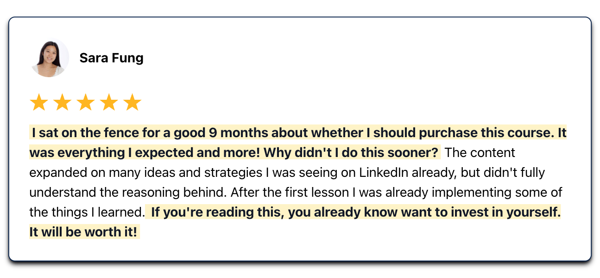

The dream of launching an online business can quickly become tangled in a web of questions, doubts, and overwhelming information.
Everywhere you turn, there's another "essential" tool, a "must-have" course, or a "secret" strategy.
It's pretty ridiculous. And amidst the chaos, the genuine desire to create something of value and be your own boss gets lost.
I've been there.
I've felt the weight of uncertainty, the paralysis of too many options, and the sting of mistakes made. But through it all, I've also learned that clarity comes from cutting through the noise.
In this article, I'll explain how to build an online business from scratch based on personal experience. Then, I'll share some profitable online business ideas you can pursue from the comfort of your home office.
I hope you find it useful.
Why I started my own online business
On December 16th, 2018, a massive panic attack stopped me dead in my tracks. Years of non-stop grind and stress had caught up with me, and I reached a breaking point.
At that time, I’d been instrumental in driving 2 companies past the $1B valuation and raising over $300M in venture capital. But my well-being was on the line, and my success felt empty.
So, I decided to step away from the rat race, pack up, and find peace in the Catskill Mountains. It was a big move, but it changed everything for me.
Today, I run my own business, teaching people like you how to make money online, find clarity, and sharpen the skills you already have. And I'm here to share everything I've learned about business planning, monetizing your knowledge, and more.
Common pitfalls online business owners make
Most aspiring entrepreneurs fail when they start their first online business.
A list of reasons why they fail is exhaustive:
- Wrong niche
- Wrong messaging
- Wrong ideal customer
- Wrong pricing structure
- Wrong product offering
- Wrong business roadmap
The list goes on and on and on…
How to build an online business from scratch
Want to give yourself a better chance at success?
Here are 7 steps I would follow if I were starting my business from scratch tomorrow:
- Understand one problem that one specific group of people have
- Create a clear and concise roadmap to solving that problem
- Figure out your product format
- Decide on where to host it
- Find some customers
- Turn customers into testimonials
- Create a system for repeatable selling
Step 1: Understand one problem that one specific group of people have
Notice I didn't say "all problems" or "all people". You need one problem that one very specific group of people have in common.
Once you know the problem, you need to know how to solve it.
The easiest way to find this? Look backward in your life.
What's a problem of your own that you solved a few years ago?
Start there.
Example:
Let's say you and all of your friends from the local state college wanted to break into a great tech company out of school, but only you figured out how.
Congratulations. You now have a solution to a common problem that other people face.
Step 2: Create a clear and concise roadmap to solving that problem
We overestimate how much people want to learn at once.
Mostly, people are looking to solve one problem. To get from point A to point B easily, quickly, and affordably.
Point A --> Point B
Craft an offer in the form of a roadmap or blueprint that is aimed at your specific target audience.
Example:
The 14-day roadmap that shows state college graduates how to land their dream job at Google.
What state college kid, who wants to land his or her dream job at Google, wouldn't pay money for that?
Step 3: Figure out your product format
This doesn't matter as much as step 1 or step 2.
The goal is to pick something you're likely to complete and complete it.
- Like to write? Write an eBook.
- Like to teach? Record a video course.
- Like systems? Build out digital materials.
It doesn't matter what format, it just matters that you'll complete it.
Remember Parkinson's Law: Work expands so as to fill the time available for its completion.
This is why I recommend timeboxing. Give yourself a very specific amount of time and a deadline to complete this project. Try starting with something fast, like 28 days.
Step 4: Decide on where to host it
Much like step 3, there are a million solutions out there. If you're just getting started, please (please!) don't overcomplicate it.
Go with Gumroad or something simple. Just pick one and get started. Get complicated down the road. Just make sales now.
Charge between $50 and $150 for your product. That's affordable enough to get buyers without building trust for many years.
The goal is to make sure you deliver thousands of dollars worth of value if not more.
Then?
Step 5: Find some customers
With the internet, there are zero excuses for not being able to find some customers.
- Write blog posts on Medium or on your website
- Chop them up and put them on LinkedIn (here's how)
- Double them up on Twitter
- Drop a nice Twitter snapshot on Instagram
- Answer questions on Quora, and write on IndieHackers and Makerpad
- Find Subreddits and Facebook groups
Yes, it's work, but it will provide you with the information to make better choices in the future by exploring different distribution channels.
You want to find which of these channels lead to sales and then triple down.
Remember to work smart.
Step 6: Turn customers into testimonials
Once you have a few customers, start automating the testimonial collection.
I use Testimonial.to to automate collection at the midway point and end of each of my courses.
Display these testimonials everywhere — your:
- Website
- Blog articles
- Social media
- Landing page
- Email newsletter
Social proof sells. Don't believe me?
→ Check out how obnoxious the social proof is on my course pages.
4.7% of the people who land on this page buy.
This leads to ~$110k+ in sales every 30 days for this product.
Step 7: Create a system for repeatable selling
Every good online business has a repeatable system.
You should know exactly where you'll post each day, at exactly what time, and why. See what content leads to impressions and engagement, and which content leads to visits and purchases. They are different.
Intersperse the different types to gain attention and then convert.
Here's a great starting point to shoot for:
Find 4 people who will buy your $75 course each day.
4*$75*365 = $109,500
That's how you create a 6-figure online product.
Back out of that number. If you know 3.5% of people buy when they get to your website, then you need to drive 114 people to your site each day.
Find your best channel from above and get 114 people there with something that piques their interest.
What do I need to start an online business?
Starting a successful online business today is more accessible than ever.
The initial tools you need are probably within arm's reach right now:
- An internet connection
- A laptop or computer
- A smartphone
With these 3 basics, you're well on your way.
But to truly set yourself up for success, here are other essentials to consider:
A website or landing page
Think of your website or landing page as your digital storefront.
It's where:
- You tell your story
- You showcase your offerings
- You convert visitors into loyal customers
- You give prospects a first impression of you and your brand
- You increase the chances of people discovering you on search engines
Without your own domain name, you're like a shop tucked away in a back alley — hard, if not impossible, to find.
But don't get bogged down thinking you need a fancy, expensive site. You don’t.
Start simple. You can always improve it as your business grows.
The key here is to just get started (Carrd is great for this!).
Project management tool
Starting an online business involves wearing many hats. Project management tools ensure you don't drop the ball anywhere.
I've personally used tools like Notion and Trello. Both are fantastic for organizing tasks, setting deadlines, and keeping tabs on project progress. In many ways, they're like a digital whiteboard, helping you visualize your workflow and stay on track.
Whether you're working for yourself or growing a team, having a central hub keeps you aligned, efficient, and on point.
An online presence (social media)
You don't need to be everywhere in the beginning. In fact, trying to conquer every platform at once is a recipe for burnout and confusion.
I started on LinkedIn and really doubled down on it. I learned its ins and outs and built a solid community there. Only after mastering LinkedIn did I venture into other territories like Twitter and Instagram.
So, my advice to you is to find where your target audience hangs out.
Start there. Give them immense value, build genuine connections, and become a go-to voice on that platform. Once you have a loyal tribe, guiding them to your other channels is much easier.
Email marketing software
Social media is great, but it's rented land. If it goes down or the rules change, you risk losing your audience.
That's where an email list steps in. It's your own piece of digital real estate.
I've explored a few email marketing tools like Mailchimp and ConvertKit. Both are excellent options for new business owners on a budget because you don't have to pay anything for your first 500-1,000 subscribers. In other words, you can slowly grow your email community without the immediate financial pressure.
Remember: You don't need to go all out from day one. But having it set up and gently guiding people there can be a game-changer. As your audience grows, you'll be grateful for that direct, unfiltered connection.
Payment processing software
So you've got a product or service, and people want it. But if they hit a wall when trying to pay you, you're leaving money on the table.
Smooth transactions are gold when running an online business. You want to make it as easy as possible for your customers to hand over their hard-earned cash. Any hiccups, any friction, and they might rethink their purchase.
Consider offering a variety of payment options (but not too many).
Here are some worth considering:
TL;DR: Make it effortless for people to pay you. The breezier the process, the happier the customer, and the better your bottom line.
Grit and resilience
Becoming a business owner isn't a walk in the park. It's more like a marathon, with its fair share of uphill battles.
Tools and tech can set you up, but it's grit and resilience that'll carry you through to the finish line.
You'll face setbacks. There'll be days when things don't click, when sales dip, or when a campaign flops. But every hiccup is a lesson, and every stumble is a chance to grow.
It's that unwavering spirit and fire in your belly that'll push you to tweak, adapt, and bounce back stronger. The road to online success isn't about avoiding pitfalls; it's about getting back up every single time.
Your mindset is your secret weapon in this journey. Cultivate it, nurture it, and let it be the driving force behind your online empire.
Related reading >> How to start a one person business
Online business ideas you can start from home
You don't need to rent an office space or commute daily to launch a business now. In fact, your next business venture can be just a click away, right from the comfort of your home.
Here are some home-based online business ideas that can be lucrative and fulfilling:
1. Freelancing
Freelancers essentially trade their time, skills, and years of expertise for money.
Many people new to business ownership start here for several reasons:
- Monetize skills: There's someone out there willing to pay for your expertise
- Flexibility and control: Set your own rates and schedule to accommodate your lifestyle
- Low expenses: No need for a fancy office or a big team — just you, your skills, a laptop, and maybe a few paid tools, depending on what you do (e.g. Adobe Photoshop for a photographer)
Some popular freelancing gigs include:
- Copywriter
- Web designer
- Photographer
- Content writer
- Virtual assistant
- Photo retoucher
- Graphic designer
- Social media manager
- SEO (keyword research and engine optimization)
The freelancing world is vast. Find your niche and start building a client base that values what you have to offer.
2. Owning an eCommerce store
eCommerce is reshaping the way we sell and shop. You don't need to be in a retail spot to sell physical products to customers anymore.
Why start an eCommerce business?
- Global reach: Your store is open to the world, 24/7
- Scalability: Start small, grow big (the digital realm allows for exponential growth)
- Diverse offerings: Whether it's handmade crafts or drop-shipped items from suppliers, the sky's the limit
Some eCommerce ideas include:
- Custom apparel
- Digital art prints
- Handcrafted jewelry
- Specialty foods and snacks
- Home decor and furnishings
With platforms like Shopify, WooCommerce (WordPress), eBay, Amazon, and Etsy, setting up an eCommerce store is easier than ever. Find a product you're into, and let the digital world be your marketplace.
3. Coaching and consulting
Ever had someone say, "You're so good at that!"? Well, coaching is about turning that 'something' into a thriving business. Coaches and consultants guide, advise, and help others achieve goals using their expertise.
Here's why you might consider it:
- Direct impact: You get to see the change you bring about in real-time
- Autonomy: Set your hours, choose your clients, and define your niche
- Monetize expertise: Every experience and skill you've honed can be valuable to someone else
Some areas ripe for coaching and consulting are:
- Financial planning
- Health and wellness
- Marketing and branding
- Personal development and life
- Business strategy and planning
With the digital tools at our fingertips today, you can coach someone from the other side of the globe as easily as your next-door neighbor. The coaching and consulting route is yours if you have knowledge and a passion for helping others.
4. Selling digital goods
The beauty of digital goods? They break the traditional boundaries of business. No physical stock, no shipping logistics, just pure content that can be shared and sold globally in a few clicks.
You may enjoy this path if you want:
- Instant delivery: Give your customers immediate access
- Low overhead: No warehouses, no shipping hassles; just pure profit
- Passive income: Once set up, digital goods can be a source of recurring revenue requiring minimal upkeep
Popular digital goods are:
- eBooks and guides
- Software and apps
- Digital art and printables
- Music and sound effects
- Online courses and workshops
5. Affiliate sales
Diving into affiliate marketing can be both exciting and profitable. Think of yourself as the bridge between a product and its potential buyers. You earn a commission for every sale made through a link or code that you provide.
Here's why I'm a fan of affiliate sales:
- Passive income potential: Once set up, you can essentially earn money in your sleep
- Low start-up costs: You don't need to create a product or maintain an inventory (instead, you're promoting someone else's product)
- Flexible: Promote products that align with your interests or the interests of your audience
- Build trust and authority: By recommending quality products and services, you can become a trusted voice in your niche
- Easy integration: Share genuine reviews or how-to guides — then plug your affiliate links where they fit naturally in your blog, YouTube, or other social media channels
As with any business, be sure to understand the product you're promoting and be transparent with your audience. Mention if links are affiliate-based and only recommend products you use, like, and believe in.
Next steps in building your business from scratch
Becoming a small business owner isn't easy, but it's certainly achievable.
It requires a long-term growth mindset, patience, and an engaged audience on a social platform of your choice.
Personally, I think LinkedIn is the best (and easiest) place to build an audience and business in 2024. If you're interested in learning how to do that, join 22,500+ students and 50 LinkedIn Top Voices in my digital course, The Operating System: Grow & Monetize Your LinkedIn.

You'll get 25+ short lessons on how to set up the perfect profile, network with peers, create valuable content consistently, and turn followers into customers. Join here.
Well, that's it for today. I hope this encourages you to go out and get something started.